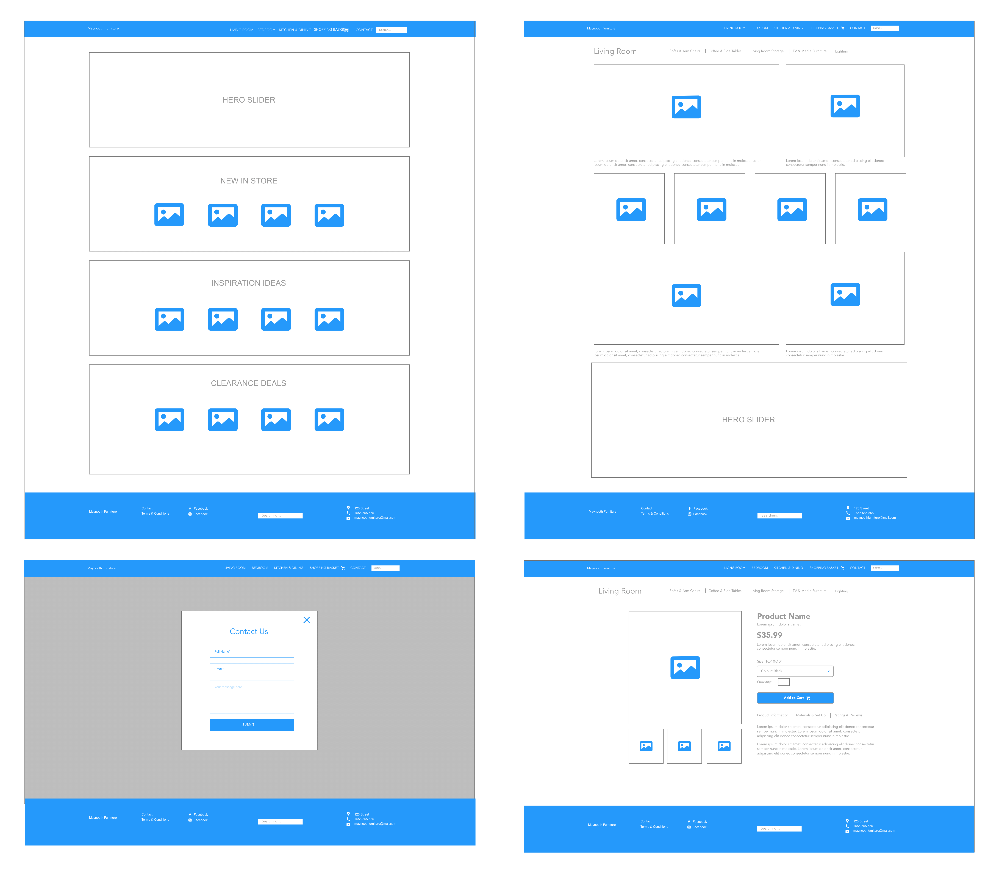
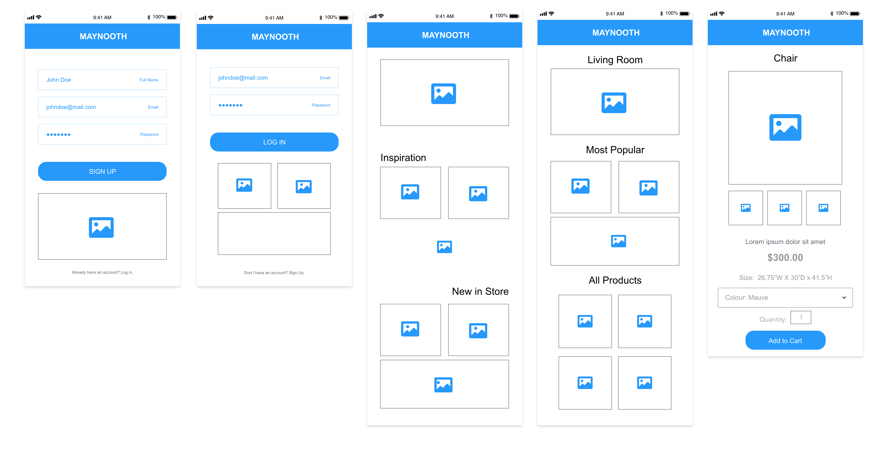
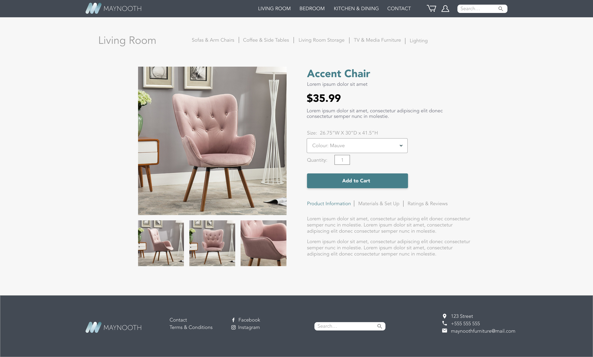
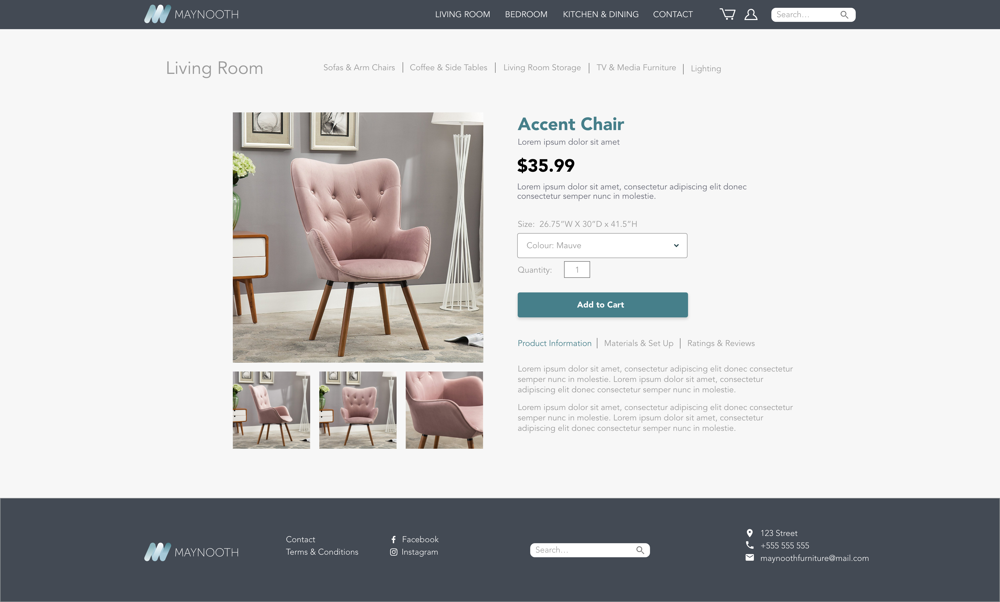
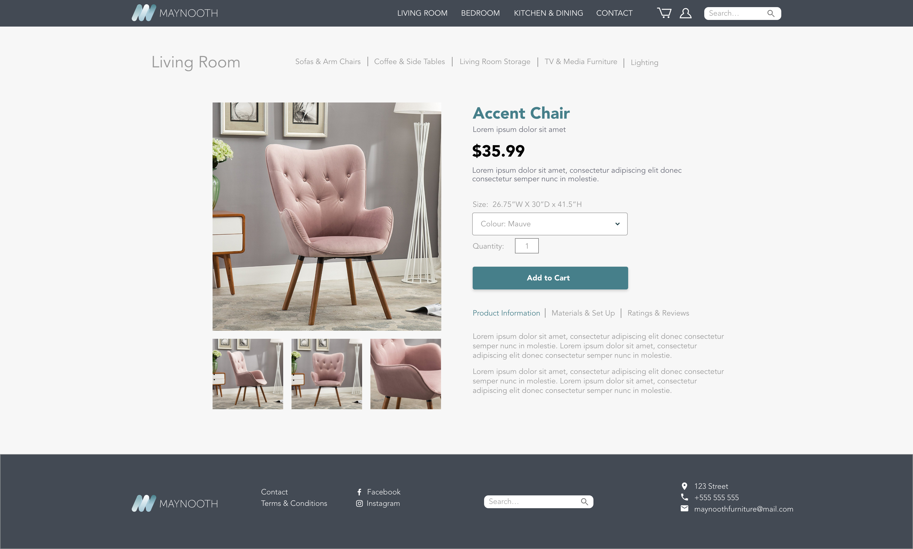

Wireframing
Using Adobe XD, I created low-difelity and high-fidelity wireframes for the website and app.
Low-Fidelity Wireframes for Web
Low-Fidelity Wireframes for iPhone
High-Fidelity Wireframes for Web

 

Maynooth Furniture is a business offering affordable high-end furniture. My objective was to design an e-commerce website for users to browse and purchase furniture for home delivery. I created a prototype for both web and mobile versions of the site.
I started by creating a moodboard and persona in order to have an understanding of the target audience and an idea of what the website would look like. The users of the website and app would be middle-high class individuals with a taste for high-end but affordable furniture. Both these deliverables allowed me to keep the target audience in mind as I began the design process.
I conducted a competitor analysis to gain inspiration and get a better understanding of e-commerce websites that sell furniture. I looked at Habitat and Made which are companies that have a similar target audience. I also looked at IKEA and after studying the websites I gathered a list of features that were necessary for this type of project.
Using Adobe XD, I created low-difelity and high-fidelity wireframes for the website and app.

Using Adobe XD's prototyping feature, I linked the appropriate artoboards together to create a prototype for the app version. It shows the user navigating through the app and adding an item to their cart. I also incorporated microinteractions which can be seen as the user taps on the different pictures of the Accent Chair and adds the item to their cart.